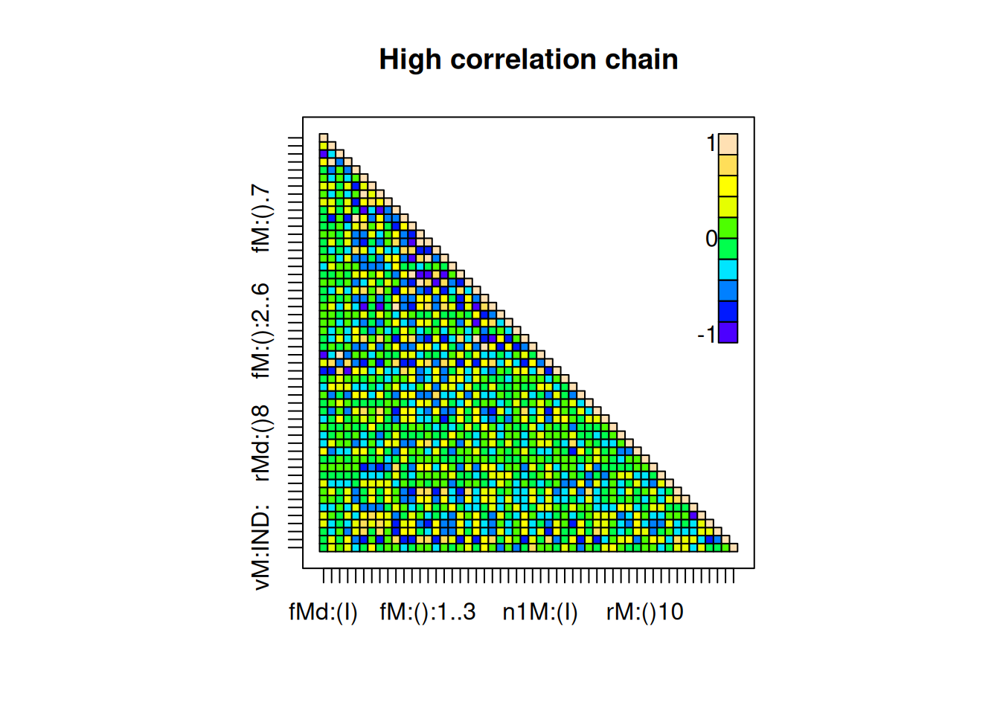
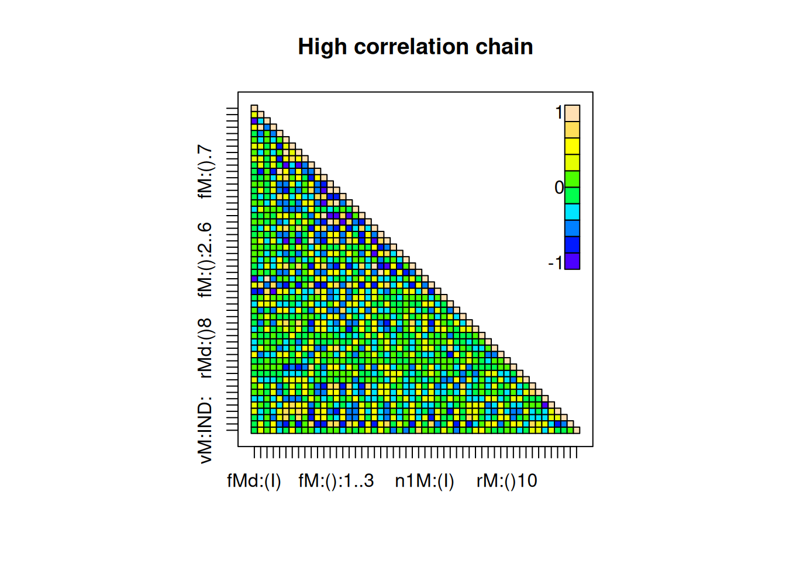

10 The statistical catch-at-age stock assessment framework with Markov Chain Monte Carlo (MCMC)
The previous methods were demonstrated using maximum likelihood estimation (MLE). However, ADMB also supports Markov Chain Monte Carlo (MCMC) methods, which provide significant advantages, particularly when working with complex models that involve many parameters. The key difference is that while MLE finds a single best estimate of parameters by maximizing the likelihood function, MCMC offers a broader perspective by generating an entire distribution of possible values. This approach is more informative because it does not just give the most likely estimate but also helps us understand the uncertainty surrounding it. With MCMC, researchers can incorporate prior knowledge and obtain results that are often more realistic and reliable (A. Gelman et al. 2013). This is especially useful when dealing with complicated models where traditional likelihood-based methods struggle, as MCMC allows for efficient exploration of possible solutions without requiring an exact mathematical formulation (Gilks, Richardson, and Spiegelhalter 1995; Robert and Casella 2005).
One of the biggest advantages of MCMC is its flexibility when working with models that have irregular behavior, such as those with multiple peaks or abrupt changes in likelihood. Standard MLE methods assume that the likelihood function behaves smoothly, but this is rarely true in real-world applications. In fisheries, ecology, and other applied sciences, models often have parameters that interact in complex ways, creating likelihood surfaces with ridges and multiple solutions. In these cases, MLE optimizers can easily get stuck in a local peak, failing to find the best possible estimate or underestimating the real uncertainty in the system (Neal 1993). Since MCMC uses a probabilistic sampling approach instead of strict optimization, it moves freely across the entire space of possible values, making it more robust and adaptable to challenging problems (Robert and Casella 2005).
Traditional MLE-based uncertainty estimation relies on the Hessian matrix, which essentially measures how quickly the likelihood function changes as parameters vary. This method assumes that the shape of the likelihood function is quadratic and roughly the same everywhere. However, this assumption is often unrealistic, especially in models with many parameters or strong correlations among them, as is common in fisheries stock assessment models.
In fields like fisheries science, where models often involve multiple correlated parameters, MCMC provides a much more flexible and realistic way to estimate uncertainty. Unlike MLE, which assumes uncertainty follows a simple symmetrical pattern, MCMC can handle more complex distributions, giving a better representation of real-world variability. This is especially important when estimating key fisheries management indicators, such as spawning stock biomass (\(SSB\)) or fishing mortality (\(F\)), which influence critical policy decisions. Because MCMC does not impose strict mathematical assumptions about the shape of uncertainty, it produces estimates that are more reflective of real-world conditions, ultimately leading to more informed and reliable management strategies.
When running MCMC, ADMB uses automatic differentiation to improve sampling efficiency and speed (Fournier et al. 2012). It supports various sampling algorithms, including Metropolis-Hastings and Hamiltonian Monte Carlo, which help navigate high-dimensional parameter spaces and complex likelihood structures more effectively. This makes ADMB particularly useful in applied sciences like fisheries and ecology, where uncertainty estimation is crucial for decision-making. Additionally, ADMB provides built-in diagnostics to assess MCMC convergence and reliability, ensuring that posterior distributions are well-explored and results are robust (A. Gelman et al. 2013).
The manual “A Guide for Bayesian Analysis in AD Model Builder” (Cole C. Monnahan, Muradian, and Kuriyama 2014) describes and explain a larger group of arguments that can be set when running MCMC with ADMB, which the method sca() uses.
10.1 The MCMC method for sca
This section shows how the sca() method interfaces with ADMB to use MCMC. For this section we’ll use the hake assessment in Mediterranean areas (gsa) 1, 5, 6 and 7.
We start by fitting the MLE model and calling afterwards the necessary MCMC methods. The outcomes of the MCMC fit need to be inspected to make sure the chain converged and the results are robust. A set of diagnostics are available to do this.
# load libraries and data
library(FLa4a)
library(ggplotFL)
data(hke1567)
data(hke1567.idx)
nsim <- 250
# MLE estimate
fmod <- ~s(age, k = 4) +
s(year, k = 8) +
s(year, k = 8, by = as.numeric(age == 0)) +
s(year, k = 8, by = as.numeric(age == 4))
qmod <- list(~I(1/(1 + exp(-age))))
fit <- sca(hke1567, hke1567.idx, fmodel=fmod, qmodel=qmod)
fit <- simulate(fit, nsim)To run the MCMC method, one needs to configure a set of arguments, which is done by creating an object of class SCAMCMC. Table 10.1 describes the arguments available to run the MCMC method, extracted from Monnahan (Cole C. Monnahan et al. 2019). For more details on the MCMC configuration in ADMB visit the ADMB website.
| Argument | Default value | Description |
|---|---|---|
mcmc |
10000 |
Run N MCMC iterations |
mcsave |
100 |
Save every N th MCMC iteration |
mcscale |
Rescale step size for first N iterations | |
mcmult |
Rescale the covariance matrix | |
mcrb |
Reduce high parameter correlations | |
mcprobe |
0.05 |
Use a fat-tailed proposal distribution |
mcdiag |
FALSE |
Use a diagonal covariance matrix |
mcnoscale |
FALSE |
Do not scale the algorithm during |
mcu |
FALSE |
Use a uniform distribution as proposal distribution |
hybrid |
FALSE |
Use the hybrid method |
hynstep |
Mean number of steps for the leapfrog method | |
hyeps |
The stepsize for the leapfrog method [X numeric and > 0] |
Defaults provide a good starting point, so let’s fit first the model. Note that the argument fit must be set to MCMC while the argument mcmc takes the SCAMCMC object just created.
# fit the model
fitmc00 <- sca(hke1567, hke1567.idx, fmodel=fmod, qmodel=qmod, fit = "MCMC", mcmc=mc)
# check acceptance rate
fitSumm(fitmc00)## iters
## 1
## nopar 52.0000
## nlogl NA
## maxgrad NA
## nobs 176.0000
## gcv NA
## convergence NA
## accrate 0.3271As usual fitSumm store relevant information about the model fit. In the case of an MCMC fit, the information stored includes the number of model parameters (nopar), the number of observations (nobs) and the acceptance rate (accrate).
Figure 10.1: Stock assessment summaries of maximum likelihood (mle) and monte carlo (mc) fits.
10.2 Diagnostics with CODA
MCMC diagnostics are used to give the analyst confidence that the posterior distribution of the parameters is unbiased, with symmetric non-correlated distributions of each parameter over which one can make inference.
There exists a large body of literature about MCMC convergence. In this section we will focus on the out-of-the-box methods for metropolis hastings algorithm available to the stock assessment scientist: trace plots, autocorrelation and cross correlation analysis, Geweke diagnostic, Gelman and Rubin’s convergence diagnostic, cumulative means, distribution density and acceptance rate. These tools should be used together to evaluate proper mixing and convergence.
ADMB has an hybrid algorithm based on Hamiltonian dynamics which will not be employed here. The reader is invited to consult Cole C. Monnahan et al. (2019) for more information.
We use the package CODA (Plummer et al. 2006) to run the diagnostics on MCMC fits. One needs to convert the sca output into a mcmc CODA object over which several diagnostics can be ran. The mcmc object is a matrix with the parameters (row = iters, cols= pars).
For demonstration purposes we create a chain with 1000 samples (mcmc=1000) and save every iter (mcsave=1), which will create a highly correlated and unstable chain, and update the initial MCMC fit to also have 1000 samples but obtained by keeping every 100th sample (mcmc=100000, mcsave=100). The latter will have a lower correlation due to the higher thinning.
# update initial fit, control random seed
mc <- SCAMCMC(mcmc=100000, mcsave=100, mcseed=10)
fitmc01 <- sca(hke1567, hke1567.idx, fmodel=fmod, qmodel=qmod, fit = "MCMC", mcmc=mc)
fitmc01.mc <- FLa4a::as.mcmc(fitmc01)
# highly correlated fit, control random seed
mc <- SCAMCMC(mcmc=1000, mcsave=1, mcseed=10)
fitmc02 <- sca(hke1567, hke1567.idx, fmodel=fmod, qmodel=qmod, fit = "MCMC", mcmc=mc)
fitmc02.mc <- FLa4a::as.mcmc(fitmc02)10.2.1 Traceplots
Trace plots (traceplot()) show the sampled values of a parameter over iterations. A plot that looks like a random, stable “cloud” of points with no trends or drifts, with rapid fluctuations, is a signal of convergence, meaning the chain mixes well and is stationary. If the trace plot shows a strong trend or periodicity, drifts, or long autocorrelated stretches, it means the chain has not converged as expected. Figure 10.2 cleary depicts this difference between the two runs.
# use mcmc.list() to create a list with both runs so they're plot together
traceplot(mcmc.list(mc01=fitmc01.mc[,1], mc02=fitmc02.mc[,2]), lwd=1.5, col=c(2,4), lty=1)
Figure 10.2: MCMC chain’s trace for the first parameter. High correlation chain in blue, low correlation chain in red.
Plotting the chains for the parameter clearly shows autocorrelation for the first parameter in the blue chain. This initial phase, when the parameter seems to be stuck in a fixed position, is called the “burn-in” phase. These iterations can be dropped by using the burnin() function. Note however that this does not decrease the autocorrelation (Figure 10.3).
Figure 10.3: MCMC chain with high autocorrelation after removing the initial 250 samples (burnin period).
10.2.2 Autocorrelation and crosscorrelation analysis
Autocorrelation analysis (acf() and acfplot()) is an useful tool to assess stationarity. A stationary chain should have low autocorrelation, meaning that each sample is approximately independent. On the opposite, high autocorrelation indicates slow mixing and possible non-stationarity. Furthermore, in a well mixed chain autocorrelation drops quickly to near zero, while a poor mixing one will display high autocorrelation, which also reduces the efficiency of the search.
The autocorrelation plot will show correlation along the chain for each parameter at different lags. Figure 10.4 shows that there is a strong autocorrelation for the first parameter which we would like to avoid, while Figure ?? shows much lower correlation.
Figure 10.4: Autocorrelation plot of the first parameter in the MCMC chain
Figure 10.5: Autocorrelation plot of the first parameter in the MCMC chain
Cross-correlation (crosscorr() and crosscorr.plot()) inspects the pairwise correlation of all parameters, which is a useful tool to assess the efficiency of the sampling process and the independence of the generated samples. If cross-correlations are high, it often means that transitions between states are slow, leading to an increased running time and requiring a larger number of samples to achieve effective independent samples. Conversely, low cross-correlation implies that parameters are explored more independently, leading to faster convergence and better mixing.
crosscorr.plot(fitmc01.mc, main="Low correlation chain")
crosscorr.plot(fitmc02.mc, main="High correlation chain") 

Figure 10.6: Crosscorrelation plots
10.2.3 Geweke diagnostic
The Geweke diagnostic (geweke.diag() and geweke.plot()) computes the Geweke-Brooks Z-score (Geweke 1992), which indicates if the first and following parts of a sample from a Markov chain are drawn from the same distribution as the last part of the chain, usually the last 50% of the samples.
It is an useful way to decide if the first few iterations should be discarded, while also provides information about the stability of the chain. Figure 10.7 shows the Geweke plot for the two MCMC runs.
geweke.plot(fitmc01.mc[,1], main="Low correlation chain")
geweke.plot(fitmc02.mc[,1], main="High correlation chain")Figure 10.7: Geweke plot of the first parameter in the MCMC chains
The panel on the left shows a much more regular chain, where the different blocks of data show similar distributions. The panel on the right clearly shows the z-score statistic changing out of the confidence intervals until about 400 samples are discarded, which points to the need to drop a set of initial samples.
The Geweke diagnostic is also a good way to look at mixing by comparing the mean and variance of the first part of the chain to the last part. Good mixing will show no significant difference between early and late samples. Poor mixing will show large differences, indicating the chain has not explored the posterior fully.
10.2.4 Cumulative means
Inspecting the cumulative mean along the chain is another good way to check for the stability of the chain. When the mixing is good the mean stabilizes quickly, and vice-versa if not.
cm01 <- fitmc01.mc[,1]
cm01 <- cumsum(cm01) / seq_along(cm01)
cm02 <- fitmc02.mc[,1]
cm02 <- cumsum(cm02) / seq_along(cm02)
plot(cm01, type="l", xlab="samples", ylab="mean", main="Low correlation chain", ylim=c(-0.52, -0.42))
plot(cm02, type="l", xlab="samples", ylab="mean", main="High correlation chain", ylim=c(-0.52, -0.42))Figure 10.8: Cumulative mean plots of the first parameter in the MCMC chains
10.2.5 Distribution density
An important element of MCMC is to produce symmetric posterior distributions, for one it’s a sign that the chain explored the space of the parameter, for other it makes inference about the parameters a lot more robust. If the distributions are skewed or multimodal, estimating the expected value and variance becomes a lot more complicated. As such having symmetric distributions is preferred and should be checked before computing statistics of interest.
Figure 10.9 shows the density plots (densplot()) for both runs, where it shows the symmetric distribution of the uncorrelated chain (left panel) and the bimodal distribution of the correlated chain.
densplot(fitmc01.mc[,1], main="Low correlation chain")
densplot(fitmc02.mc[,1], main="High correlation chain")Figure 10.9: Density plots of the first parameter in the MCMC chains
10.2.6 Gelman-Rubin statistic
The Gelman-Rubin statistic (\(\hat{R}\)) (Andrew Gelman and Rubin 1992) can be used to check if multiple chains have reached a stable state and are properly exploring the target distribution. It compares how much variation exists within each chain to the variation between different chains. If all chains are sampling from the same distribution, these variations should be similar, and \(\hat{R}\) will be close to 1, otherwise, if it’s greater than 1.1 it suggests that the chains have not yet converged.
To compute \(\hat{R}\), multiple chains are run with different starting points. The algorithm measures how spread out the samples are within each chain and compares it to how much the chains differ from each other. If the chains have not mixed well, they will appear too different from each other, and \(\hat{R}\) will be large. If the chains have mixed properly, they will have a similar spread, and the statistic will be close to 1.
To run another chain one makes use of the mcseed argument to make sure the 2 chains start from different places. The Gelman-Rubin statistics is computed by the gelman.diag() method and depicted with gelman.plot(). It’s easy to see the difference between the two fits. While the low corrrelation fit shows values close to 1 for most parameters, the high correlation fit shows a number of large values.
# low correlation
mc <- SCAMCMC(mcmc=100000, mcsave=100, mcseed=30)
fitmc01b <- sca(hke1567, hke1567.idx, fmodel=fmod, qmodel=qmod, fit = "MCMC", mcmc=mc)
fitmc01b.mc <- FLa4a::as.mcmc(fitmc01b)
# highly correlated fit
mc <- SCAMCMC(mcmc=1000, mcsave=1, mcseed=30)
fitmc02b <- sca(hke1567, hke1567.idx, fmodel=fmod, qmodel=qmod, fit = "MCMC", mcmc=mc)
fitmc02b.mc <- FLa4a::as.mcmc(fitmc02b)
# create lists for comparison
mclst01 <- mcmc.list(a=fitmc01.mc, b=fitmc01b.mc)
mclst02 <- mcmc.list(a=fitmc02.mc, b=fitmc02b.mc)## Potential scale reduction factors:
##
## Point est. Upper C.I.
## fMod:(Intercept) 1.001 1.001
## fMod:s(age).1 1.024 1.112
## fMod:s(age).2 1.002 1.005
## fMod:s(age).3 1.021 1.099
## fMod:s(year).1 1.001 1.011
## fMod:s(year).2 1.004 1.020
## fMod:s(year).3 1.011 1.051
## fMod:s(year).4 1.008 1.040
## fMod:s(year).5 1.002 1.013
## fMod:s(year).6 1.004 1.024
## fMod:s(year).7 1.001 1.007
## fMod:s(year):by1..1 0.999 1.000
## fMod:s(year):by1..2 1.003 1.011
## fMod:s(year):by1..3 1.001 1.005
## fMod:s(year):by1..4 1.003 1.013
## fMod:s(year):by1..5 1.005 1.006
## fMod:s(year):by1..6 1.018 1.088
## fMod:s(year):by1..7 0.999 0.999
## fMod:s(year):by1..8 0.999 1.000
## fMod:s(year):by2..1 1.008 1.039
## fMod:s(year):by2..2 0.999 1.001
## fMod:s(year):by2..3 1.008 1.040
## fMod:s(year):by2..4 1.000 1.004
## fMod:s(year):by2..5 1.003 1.018
## fMod:s(year):by2..6 1.003 1.003
## fMod:s(year):by2..7 1.007 1.037
## fMod:s(year):by2..8 1.000 1.001
## n1Mod:(Intercept) 1.002 1.013
## n1Mod:s(age).1 1.000 1.003
## n1Mod:s(age).2 1.001 1.006
## rMod:(Intercept) 1.000 1.000
## rMod:factor(year)1 0.999 0.999
## rMod:factor(year)2 1.000 1.001
## rMod:factor(year)3 1.002 1.002
## rMod:factor(year)4 1.002 1.005
## rMod:factor(year)5 1.000 1.000
## rMod:factor(year)6 1.005 1.008
## rMod:factor(year)7 0.999 0.999
## rMod:factor(year)8 1.010 1.045
## rMod:factor(year)9 1.001 1.003
## rMod:factor(year)10 1.000 1.004
## rMod:factor(year)11 1.001 1.008
## rMod:factor(year)12 1.011 1.053
## rMod:factor(year)13 1.003 1.003
## rMod:factor(year)14 1.004 1.019
## rMod:factor(year)15 1.008 1.034
## qMod:IND:(Intercept) 1.003 1.017
## qMod:IND:I(1/(1 + exp(-age))) 1.004 1.017
## vMod:catch:(Intercept) 0.999 0.999
## vMod:catch:s(age).1 1.002 1.013
## vMod:catch:s(age).2 1.001 1.010
## vMod:IND:(Intercept) 1.000 1.000
##
## Multivariate psrf
##
## 1.11## Potential scale reduction factors:
##
## Point est. Upper C.I.
## fMod:(Intercept) 1.11 1.12
## fMod:s(age).1 1.09 1.12
## fMod:s(age).2 1.12 1.20
## fMod:s(age).3 1.13 1.27
## fMod:s(year).1 1.11 1.41
## fMod:s(year).2 2.04 4.32
## fMod:s(year).3 2.75 6.01
## fMod:s(year).4 1.72 3.40
## fMod:s(year).5 1.11 1.41
## fMod:s(year).6 1.82 3.62
## fMod:s(year).7 1.08 1.27
## fMod:s(year):by1..1 2.55 5.44
## fMod:s(year):by1..2 2.44 6.05
## fMod:s(year):by1..3 2.41 5.03
## fMod:s(year):by1..4 1.19 1.38
## fMod:s(year):by1..5 2.17 4.27
## fMod:s(year):by1..6 2.27 4.39
## fMod:s(year):by1..7 2.49 5.58
## fMod:s(year):by1..8 1.23 1.87
## fMod:s(year):by2..1 1.08 1.27
## fMod:s(year):by2..2 1.01 1.01
## fMod:s(year):by2..3 1.14 1.50
## fMod:s(year):by2..4 1.87 3.41
## fMod:s(year):by2..5 1.13 1.33
## fMod:s(year):by2..6 1.45 2.41
## fMod:s(year):by2..7 1.08 1.30
## fMod:s(year):by2..8 1.33 2.03
## n1Mod:(Intercept) 1.04 1.06
## n1Mod:s(age).1 1.23 1.46
## n1Mod:s(age).2 1.19 1.22
## rMod:(Intercept) 1.15 1.53
## rMod:factor(year)1 2.19 5.80
## rMod:factor(year)2 1.12 1.40
## rMod:factor(year)3 1.26 2.10
## rMod:factor(year)4 1.19 1.20
## rMod:factor(year)5 1.78 3.19
## rMod:factor(year)6 2.32 4.62
## rMod:factor(year)7 1.07 1.16
## rMod:factor(year)8 2.15 4.22
## rMod:factor(year)9 1.07 1.16
## rMod:factor(year)10 1.21 1.29
## rMod:factor(year)11 3.29 7.95
## rMod:factor(year)12 2.67 5.39
## rMod:factor(year)13 1.32 2.01
## rMod:factor(year)14 1.03 1.04
## rMod:factor(year)15 1.98 3.69
## qMod:IND:(Intercept) 1.18 1.62
## qMod:IND:I(1/(1 + exp(-age))) 1.49 2.53
## vMod:catch:(Intercept) 1.75 4.09
## vMod:catch:s(age).1 1.13 1.36
## vMod:catch:s(age).2 1.26 1.99
## vMod:IND:(Intercept) 1.54 2.57
##
## Multivariate psrf
##
## 16.2mclst01 <- mcmc.list(a=fitmc01.mc[,1], b=fitmc01b.mc[,1])
mclst02 <- mcmc.list(a=fitmc02.mc[,1], b=fitmc02b.mc[,1])
gelman.plot(mclst01, main="Low correlation chain", ylim=c(1, 5))
gelman.plot(mclst02, main="High correlation chain", ylim=c(1, 5))Figure 10.10: Gelman-Rubin’s diagnostic plots for the first parameter.
10.2.7 Acceptance rate
The acceptance rate in Markov Chain Monte Carlo (MCMC) methods plays a crucial role in balancing exploration and efficiency when sampling from a posterior distribution. It represents the proportion of proposed states that are accepted in the Markov chain and directly influences mixing, convergence, and the quality of inference.
A low acceptance rate (e.g., <20%) means that most proposed moves are rejected, leading to slow exploration of the posterior distribution. This can result in poor mixing and high autocorrelation between samples (A. Gelman et al. 2013). A high acceptance rate (e.g., >80%) suggests that the proposals are too conservative, leading to small moves and highly correlated samples.
Cole C. Monnahan et al. (2019) suggests that the optimal acceptance rate varies by model size, among other things, but is roughly 40%, although models with more parameters should have a lower optimal acceptance rate. A. Gelman, Gilks, and Roberts (1997) complementary suggest that for Random Walk Metropolis-Hastings (RWMH) in high-dimensional spaces an optimal acceptance rate is about 25%.
The acceptance rate is reported out of the MCMC fit and can be accessed with fitSumm(). Inspecting the acceptance rate for the models we’re using shows a higher acceptance rate for the high correlation model, although both are above the recommended optimal for high dimensional models, like the models used in stock assessment.
data.frame(hessian_scale=c(fitSumm(fitmc01)),
hessian_noscale=c(fitSumm(fitmc02)),
row.names=rownames(fitSumm(fitmc01)))## hessian_scale hessian_noscale
## nopar 52.00000 52.000
## nlogl NA NA
## maxgrad NA NA
## nobs 176.00000 176.000
## gcv NA NA
## convergence NA NA
## accrate 0.31914 0.37210.3 ADMB’s arguments to tune the MCMC algorithm
This section is based on Cole C. Monnahan et al. (2019) and describes a set of arguments and methods which the stock assessment analyst can use to tune the MCMC algorithm and be more confident on its convergence and follow up inference.
10.3.1 Thinning rate
For the Metropolis-Hastings algorithm, the most important tuning option available to the user is the saving rate (the inverse of the thinning rate). This is the rate at which parameters are saved, such that thinning is effectively discarding draws. This tuning option is critical since this algorithm generates auto-correlated parameters by design. The user controls the thinning rate with the argument mcsave.
If N = 1 every single draw is saved (none are thinned out), which generates high autocorrelation, suggesting the need to thin more (save fewer). This is the case of the fitmc02 fit. In fitmc01 mcsave was increased to 100, by increasing the total samples by 100 and saving every 100th. This helps reduce the autocorrelation and produces independent draws from the posterior of interest.
10.3.2 mcscale and mcnoscale
ADMB “scales” the covariance matrix up or down, depending on the current acceptance rate, during the first part of the chain. Scaling the covariance matrix down produces proposed sets closer to the current set, and vice versa for scaling up. By default, it scales during the first 500 iterations before thinning, but the user can specify this with mcscale or turn off scaling with mcnoscale. ADMB rescales the covariance matrix every 200 iterations until the acceptance rate is between 0.15 and 0.4, or the scaling period is exceeded. Draws from this tuning phase should be discarded as part of the burn-in.
The code below illustrates the effect in the acceptance rate of not scaling the hessian, the acceptance rate drops significantly, which means poor mixing and higher autocorrelation.
# no scale
mc <- SCAMCMC(mcmc=100000, mcsave=100, mcseed=10, mcnoscale=TRUE)
fitmc01ns <- sca(hke1567, hke1567.idx, fmodel=fmod, qmodel=qmod, fit = "MCMC", mcmc=mc)
fitmc01ns.mc <- FLa4a::as.mcmc(fitmc01ns)
data.frame(hessian_scale=c(fitSumm(fitmc01)),
hessian_noscale=c(fitSumm(fitmc01ns)),
row.names=rownames(fitSumm(fitmc01)))## hessian_scale hessian_noscale
## nopar 52.00000 52.00000
## nlogl NA NA
## maxgrad NA NA
## nobs 176.00000 176.00000
## gcv NA NA
## convergence NA NA
## accrate 0.31914 0.08582In the next analysis we show the autocorrelation statistics for lags of 0, 1, 5, 10 and 50. When the hessian is not scaled the autocorrelation of lag 1 increased from 0.33 to 0.43.
data.frame(hessian_scale=c(autocorr.diag(fitmc01.mc[,1])),
hessian_noscale=c(autocorr.diag(fitmc01ns.mc[,1])),
row.names=c(0, 1, 5, 10, 50))## hessian_scale hessian_noscale
## 0 1.000000000 1.0000000000
## 1 0.331021210 0.4283436263
## 5 0.020797197 0.0006163336
## 10 0.038728809 0.0067920000
## 50 0.005681063 -0.019373662110.3.3 mcprobe
For some models, there may be concern of being “stuck” in a local minimum and simply never proposing a value far enough away to escape it and find other regions of high density. ADMB has a built-in algorithm which modifies the default proposal distribution so it occasionally proposes very distant parameters (i.e. “probes”). The modified proposal distribution is a mixture distribution of Normal and Cauchy distributions.
The mcprobe argument controls how the two distributions are mixed, with larger values being more Cauchy (fatter tails, larger jumps). The range of valid inputs is 0.00001 to 0.499, and if no value is supplied a default of 0.05 is used.
# more Cauchy
mc <- SCAMCMC(mcmc=1000, mcsave=1, mcseed=10, mcprobe=0.45)
fitmc02p <- sca(hke1567, hke1567.idx, fmodel=fmod, qmodel=qmod, fit = "MCMC", mcmc=mc)
fitmc02p.mc <- FLa4a::as.mcmc(fitmc02p)
data.frame(probe_0.05=c(fitSumm(fitmc02)),
probe_0.45=c(fitSumm(fitmc02p)),
row.names=rownames(fitSumm(fitmc02)))## probe_0.05 probe_0.45
## nopar 52.000 52.000
## nlogl NA NA
## maxgrad NA NA
## nobs 176.000 176.000
## gcv NA NA
## convergence NA NA
## accrate 0.372 0.343In the next analysis we show the autocorrelation statistics for lags of 0, 1, 5, 10 and 50. When the hessian is not scaled the autocorrelation of lag 1 increased from 0.33 to 0.37.
data.frame(probe_0.05=c(autocorr.diag(fitmc02.mc[,1])), probe_0.45=c(autocorr.diag(fitmc02p.mc[,1])))## probe_0.05 probe_0.45
## 1 1.00000000 1.0000000
## 2 0.97474570 0.9771081
## 3 0.86670724 0.8964793
## 4 0.72167253 0.7867470
## 5 0.03102215 0.393689410.3.4 mcrb
The mcrb option (which stands for “rescaled bounded”) alters the covariance matrix used to propose new parameter sets in the Metropolis-Hastings algorithm. Its intended use is to create a more efficient MCMC sampler so the analyses run faster. This option reduces the estimated correlation between parameters. The value must be integer between 1 and 9, inclusive, with lower values leading to a bigger reduction in correlation.
The option will be most effective under circumstances where the correlation between parameters at the posterior mode is higher than other regions of the parameter space. In this case, the algorithm may make efficient proposals near the posterior mode, but inefficient proposals in other parts of the parameter space. By reducing the correlation using mcrb the proposal function may be more efficient on average across the entire parameter space and require less thinning (and hence run faster).
# reduce correlation
mc <- SCAMCMC(mcmc=100000, mcsave=100, mcseed=10, mcrb=9)
fitmc01r <- sca(hke1567, hke1567.idx, fmodel=fmod, qmodel=qmod, fit = "MCMC", mcmc=mc)
fitmc01r.mc <- FLa4a::as.mcmc(fitmc01r)
data.frame(mcrb_no=c(fitSumm(fitmc01)),
mcrb_high=c(fitSumm(fitmc01r)),
row.names=rownames(fitSumm(fitmc01)))## mcrb_no mcrb_high
## nopar 52.00000 52.00000
## nlogl NA NA
## maxgrad NA NA
## nobs 176.00000 176.00000
## gcv NA NA
## convergence NA NA
## accrate 0.31914 0.26789In the next analysis we show the cross-correlation plots (Figure ??).
Figure 10.11: Cross correlation for run without mcrp and mcrp of 9.
Figure 10.12: Cross correlation for run without mcrp and mcrp of 9.